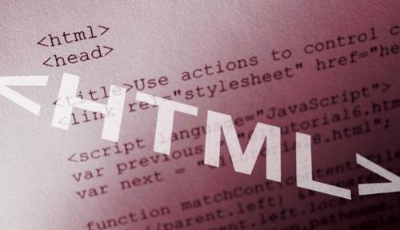

HTML (от англ. HyperText Markup Language — «язык разметки гипертекста») — стандартный язык разметки документов во Всемирной паутине. Большинство веб-страниц создаются при помощи языка HTML (или XHTML1). Язык HTML интерпретируется браузером и отображается в виде документа, в удобной для человека форме. HTML является приложением («частным случаем») SGML2 (стандартного обобщённого языка разметки) и соответствует международному стандарту ISO 8879. XHTMsL же является приложением XML3.
1 - Extensible Hypertext Markup Language
2 - Standard Generalized Markup Language
3 - eXtensible Markup Language
Язык HTML был разработан британским учёным Тимом Бернерсом-Ли приблизительно в 1991—1992 годах в стенах Европейского совета по ядерным исследованиям в Женеве (Швейцария).HTML создавался как язык для обмена научной и технической документацией, пригодный для использования людьми, не являющимися специалистами в области вёрстки. HTML успешно справлялся с проблемой сложности SGML путём определения небольшого набора структурных и семантических элементов — дескрипторов. Дескрипторы также часто называют «тегами».Мультимедийные возможности были добавлены позже.
С помощью HTML можно легко создать относительно простой, но красиво оформленный документ. Помимо упрощения структуры документа, в HTML внесена поддержка гипертекста.
Изначально язык HTML был задуман и создан как средство структурирования и форматирования документов без их привязки к средствам воспроизведения (отображения). В идеале, текст с разметкой HTML должен был без стилистических и структурных искажений воспроизводиться на оборудовании с различной технической оснащённостью (цветной экран современного компьютера, монохромный экран органайзера, ограниченный по размерам экран мобильного телефона или устройства и программы голосового воспроизведения текстов). Однако современное применение HTML очень далеко от его изначальной задачи
Текстовые документы, содержащие код на языке HTML (такие документы традиционно имеют расширение .html или .htm), обрабатываются специальными приложениями, которые отображают документ в его форматированном виде. Такие приложения, называемые «браузерами» или «интернет-обозревателями», обычно предоставляют пользователю удобный интерфейс для запроса веб-страниц, их просмотра (и вывода на иные внешние устройства) и, при необходимости, отправки введённых пользователем данных на сервер. Наиболее популярными на сегодняшний день браузерами являются